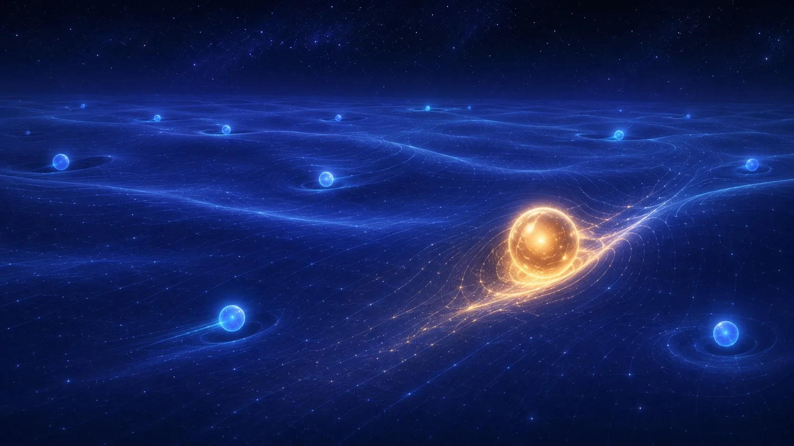

The Famous Higgs Boson
Every particle you've met so far has had a mass — some tiny (the electron), some absurd (the top quark). But nothing in the Standard Model, as originally written, explained why any particle should have mass at all. That question sat unresolved for nearly fifty years, from a 1964 proposal to a 2012 discovery.
The proposal, made independently by Peter Higgs and by Francois Englert with Robert Brout, was this: space itself isn't empty. It's filled with an invisible field — the Higgs field — and particles get their mass by interacting with it. The more strongly a particle interacts with the field, the more massive it behaves. A particle that doesn't interact with it at all, like the photon, stays perfectly massless.

An evocative illustration of the Higgs field: a vast, faintly glowing indigo field of light stretching to the horizon, with a few glowing particles moving through it, some leaving barely a ripple, one heavy golden particle dragging a visible wake of light behind it to show it interacting strongly with the field. Deep-space observatory palette (indigo, glowing blue accent, warm gold as the one contrasting highlight), no text baked in, awe-inspiring and scientific, flat-modern editorial illustration style. Target size ~1280×720px, 16:9 landscape; compose for a small on-page figure, subject centred with safe margins since it is letterboxed into a 16:9 box.
Generate this with your image agent, then drop the file here.
On 4 July 2012, the ATLAS and CMS experiments at CERN's Large Hadron Collider independently announced they'd found a new particle — a ripple in the Higgs field itself, the Higgs boson — with a mass around 125 GeV. Both teams crossed "five sigma," the strict statistical bar physicists require before calling something a discovery rather than a coincidence. Englert and Higgs shared the 2013 Nobel Prize in Physics for the theory the discovery confirmed.
- Charge
- 0
- Mass
- ~125 GeV
- Personality
- Shy — decays almost instantly, only ever seen indirectly
Predicted in 1964, confirmed 48 years later, in 2012.